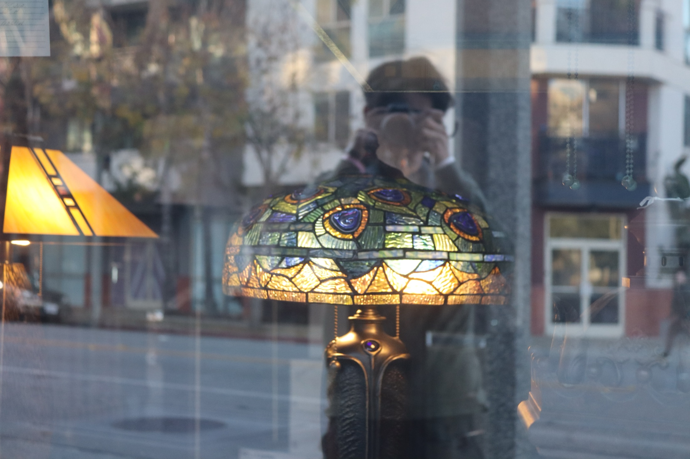

About
Tyler Law
Photographer working under the name Cork Jar. Editorial, landscape and portrait, with a soft spot for the frames most people walk past.

I make photographs to slow time down. A jar holds what would otherwise spill, and that is how I think about a frame: light and a moment, sealed so you can come back to them.
I shoot across three threads. On the street and on editorial jobs, I am chasing honesty: real expressions, real light, no forcing it. In the landscape, I am after scale and quiet. In portraits, I want you to look like the best, truest version of a regular day.
I keep my kit small on purpose: a Sony a6300, a Canon Rebel T7, and a Nikon 1 sealed in an underwater housing for everything wet. The grade comes after, and dialing that color in is half of why the work looks the way it does.
If any of that lines up with what you are making, I would love to hear about it.
The name
Cork Jar. CJ. A small vessel for keeping something good before it goes. That is the whole idea behind the work, so it became the name.
Say hello.
Commissions, prints, the upcoming color grades, or just to talk shop. The inbox is open.